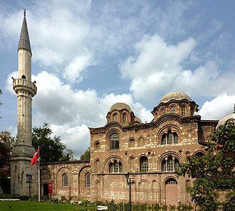

Presentación
L’église Pammakaristos, aussi appelée église de la Theotokos Pammakaristos, est l’une des plus célèbres églises grecques orthodoxes d’Istanbul (Turquie). Transformée en mosquée en 1591 après la conquête par Mehmet II, elle prit alors le nom de mosquée Fethiye. Une partie de celle-ci, le parecclesion, sert aujourd’hui de musée.
جامع الفاتحية يعرف أيضًا باسم كنيسة ثيوتوكوس باماكاريستوس ، هي إحدى الكنائس البيزنطية الأكثر شهرة في إسطنبول، تركيا، وكانت آخر مبنى قبل العصر العثماني يضم المجمع المسكوني. البطريركية. تم تحويله عام 1591 إلى مسجد فتحية ، وهو اليوم متحف يقع جزئيًا في كنيسة جانبية أو باريكليسيون. واحدة من أهم الأمثلة على العمارة الباليولوجية في القسطنطينية، تحتوي الكنيسة على أكبر كمية من الفسيفساء البيزنطية في إسطنبول بعد آيا صوفيا والخورا.
The Pammakaristos Church, also known as the Church of Theotokos Pammakaristos, is one of the most famous Byzantine church buildings in Istanbul, Turkey, and was the last pre-Ottoman building to house the Ecumenical Patriarchate. Converted in 1591 into the Fethiye Mosque, it is today partly a museum housed in a side chapel or parekklesion. One of the most important examples of Constantinople's Palaiologan architecture, the mosque contains the largest quantity of Byzantine mosaics in Istanbul after the Hagia Sophia and The Chora.
Fethiye Camii veya Teotokos Pamakaristos Kilisesi, İstanbul'un Fatih ilçesinin Çarşamba semtinde camiye çevrilmiş bir Rum Ortodoks kilisesidir.
Gereja Pammakaristos, yang juga dikenal dengan sebutan Gereja Theotokos Pammakaristos, yang pada 1591 dialihkan menjadi sebuah masjid dan dikenal dengan sebutan Masjid Fethiye dan sekarang menjadi sebuah museum, adalah salah satu gereja Bizantium paling terkenal di Istanbul, Turki. Parekklesion, di samping menjadi salah satu contoh paling berpengaruh dari arsitektur Palaiologan di Konstantinopel, dan bangunan pra-Utsmaniyah terakhir yang menjadi rumah Kepatriarkan Ekumenikal, juga memiliki jumlah mozaik Bizantium terbesar di Istanbul setelah Hagia Sophia dan Gereja Chora.
پاماکاریستوس گرجا گھر (یونانی: Θεοτόκος ἡ Παμμακάριστος) قسطنطنیہ کا سب سے مشہور یونانی راسخ الاعتقاد بازنطینی گرجا گھر ہے۔ 1591ء میں اسے ایک مسجد میں تبدیل کر دیا گیا تھا تاہم اب یہ ایک عجائب گھر ہے۔
Die Kirche der Theotókos Pammakarístos oder Pammakaristos-Kirche, heute Fethiye-Moschee (Fethiye Camii) bzw. Fethiye-Museum genannt, war eine der berühmtesten byzantinischen Kirchen in Konstantinopel. Die Seitenkapelle (Parekklesion) der ehemaligen Pammakaristos-Klosterkirche besitzt nach der Hagia Sophia und der Chora-Kirche die meisten Mosaiken in Istanbul und ist seit 1949 ein Museum.
La iglesia de Pammakaristos, también conocida como iglesia de la Bienaventurada Madre de Dios, denominada posteriormente mezquita de la Conquista y hoy día en parte museo, es una de las iglesias bizantinas más famosas de Estambul (Turquía). El paraclesion —la capilla lateral anexa— constituye una de los ejemplos más sobresalientes de la arquitectura del tiempo de los emperadores Paleólogos y conserva la mayor cantidad de mosaicos bizantinos en Estambul después de Santa Sofía y la iglesia de San Salvador de Chora.
La chiesa della Theotókos Pammakaristos, in seguito divenuta moschea e nota come Fethiye Camii, poi trasformata in museo, è oggi in parte riaperta al culto islamico e in parte un museo. Il suo parekklesion è una delle più famose chiese bizantine superstiti di Istanbul, Turchia, e, oltre ad essere uno dei più importanti esempi dell'architettura paleologa di Costantinopoli, conserva il maggior numero di mosaici bizantini a Istanbul dopo Hagia Sophia e la Chiesa di San Salvatore in Chora. La chiesa principale, già sede del patriarcato greco ortodosso dopo l'abbandono della chiesa dei Santi Apostoli, è una moschea.
A Igreja de Pamacaristo, atualmente chamada Mesquita da Conquista é uma das igrejas bizantinas mais famosas de Istambul, Turquia. O seu pareclésio é um dos melhores exemplos da arquitetura do período da dinastia paleóloga e é igreja de Istambul com mais mosaicos a seguir à Basílica de Santa Sofia e à Igreja de São Salvador em Cora. Atualmente é uma mesquita, estando uma parte convertida em museu.
De Pammakaristoskerk, ook bekend als de Kerk van Theotokos Pammakaristos is een voormalige Byzantijnse kerk uit de 12e eeuw in Istanboel, Turkije. In 1591 werd het gebouw ingewijd als moskee en het heet sindsdien de Fethiye-moskee wat "Moskee van de verovering" betekent. Tegenwoordig is het een museum.
帕玛卡里斯托斯教堂 是土耳其伊斯坦布尔最著名的希腊东正教拜占庭教堂之一，位于伊斯坦布尔城墙内法蒂赫区，俯瞰金角湾。在1591年改为“费特希耶清真寺”，今天小堂部分（parekklesion）是一个博物馆。建筑是君士坦丁堡最重要的巴列奥略建筑之一，也是君士坦丁堡普世牧首驻扎的最后一个前奥斯曼帝国建筑。它还拥有伊斯坦布尔最大数量的拜占庭马赛克，仅次于圣索菲亚大教堂和科拉教堂。
Церковь Богородицы Паммакаристы, Фетхие́-джами́ — бывшая церковь монастыря Паммакаристос, самый значительный памятник византийского искусства, сохранившийся в Стамбуле от правления Палеологов. По площади уцелевших мозаик уступает лишь собору Святой Софии и церкви в Хоре.
Pammakaristos kyrka, också känd som Fethiye-moskén, är en tidigare kyrka, moské och numera delvis museum under namnet Fethiye Muzesi i Istanbul i Turkiet. Som bysantinsk kyrka hette den Jungfru Marias kyrka och var en av de mest kända grekisk-ortodoxa kyrkorna i Istanbul. Den omvandlades till en moské år 1591 och fick namnet Fethiye-moskén.
En el mapa
Documentos y enlaces
- Wikipédia — Français
- Wikipédia — العربية
- Wikipédia — English
- Wikipédia — Türkçe
- Wikipédia — Bahasa Indonesia
- Wikipédia — اردو
- Wikipédia — Deutsch
- Wikipédia — Español
- Wikipédia — Italiano
- Wikipédia — Português
- Wikipédia — Nederlands
- Wikipédia — 中文
- Wikipédia — Русский
- Wikipédia — Svenska
- Wikidata — Q1420984
Datos: Wikidata (CC0), actualizados cada 3 meses. El año es la fecha de construcción conocida más antigua del edificio: para un edificio convertido después en mezquita (como Santa Sofía), es la del edificio original. Fotos: Wikimedia Commons, autor y licencia en la página de cada foto.